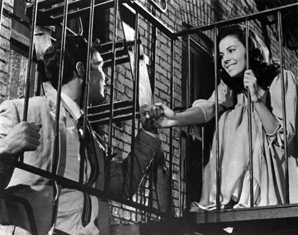
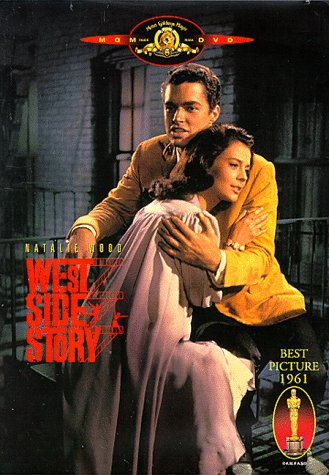

West Side Story
Musical de 1957; filmada como película
en 1961

Famosa imagen de Tony, joven polaco, y María, joven puertorriqueña—amantes destinados a la tragedia—en una pose que recuerda la escena de "Romeo y Julieta" en la que Julieta conversa con Romeo desde su balcón. |
 |